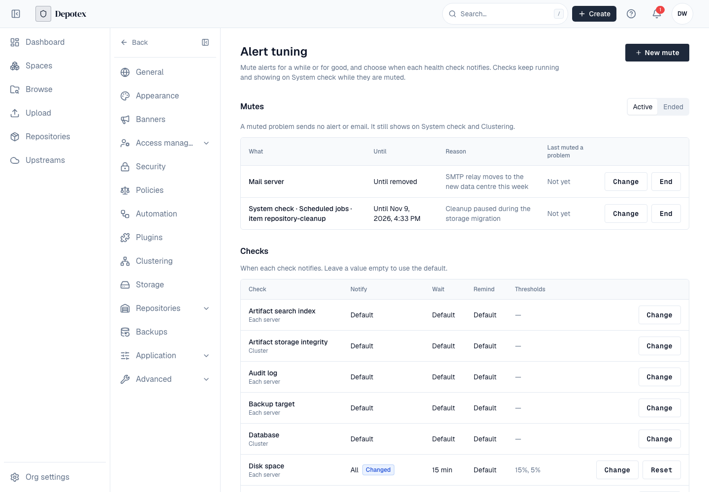
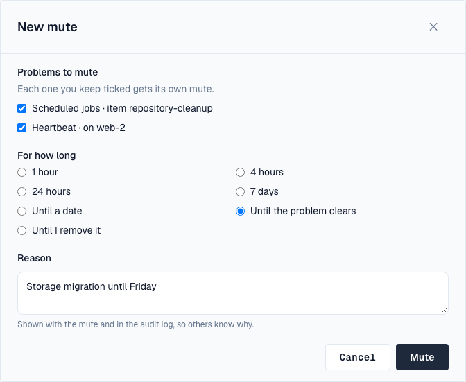

1. Overview
Alert tuning decides which health problems send an alert or email, and when. Mute a problem for an hour, until a date, until it clears or until you remove it; turn a check's notifications off, or keep only its failures; wait longer before telling; and change a check's thresholds, such as how late a scheduled job may be. A muted or turned-off check keeps running and keeps showing on the system check and Settings → Clustering: only its notifications stop.
Open it under Settings → Advanced → Alert tuning. You need the settings:write permission (super admins). The system check and cluster health need a Pro license or higher; mutes of whole alert categories work on every license.

2. One alert per problem
The system check (every hour, every check) and cluster health (every minute, each server) look at the same installation, so one problem used to be able to send two alerts, Cluster health: problems and System check found problems, and two more when it recovered. Now both report to one System health alert. It says how many problems need attention, on which servers, and how many more are muted, and it is updated in place: when the problem gets worse, changes, or clears (System health is OK again). An unchanged problem sends a reminder once a day.
A problem the hourly check finds for the first time is checked again two minutes later and only told if it is still there, so a short blip doesn't alert. After a server was paused (a suspended VM, a stopped process, or a machine too busy to run Depotex for a while), scheduled jobs get 15 minutes to catch up before they count as overdue, and a job only counts as overdue once it is later than 10 minutes or two of its own intervals, whichever is longer.
A problem that keeps opening and clearing (4 times within an hour) sends one flapping alert and then waits until it has been quiet for an hour.
3. Mute an alert
Every System health alert has a Mute… button, and so does each problem under Needs attention on the system check and under Cluster health on Settings → Clustering. It opens a new mute with those problems ticked; each one you keep gets its own mute.
- Open the mute — Select Mute… on the alert or the problem, or New mute on Settings → Alert tuning.
- Say what — From an alert, untick problems you still want to hear about. Otherwise choose a Source (a detector or a whole alert category), a Check, a Server and, optionally, an Item (one job, identity provider or directory the check names). Leave a field on its first choice to match anything; set at least one.
- Say how long — 1 hour, 4 hours, 24 hours, 7 days, Until a date (within a year), Until the problem clears (ends by itself the first time nothing it covers is wrong), or Until I remove it.
- Give a reason — Required. It is shown with the mute and in the audit log, so others know why.
- Mute — Select Mute.

Mutes lists the active ones: what each covers, until when, the reason and when it last held back a problem. Change sets a new end or reason; End sends alerts again from the next check. Ended lists mutes that were removed, expired or ended when their problem cleared.
A mute whose source is a whole alert category, with no check, server or item, stops every alert of that category for the whole installation, whatever sends it (automation, plugins, security notices). Alerts an administrator sends by hand are never muted. This differs from the muted categories in a person's own notification preferences, which hide alerts from that person only.
Muting a problem never announces it as fixed: the alert drops it from its count, and when the mute ends while the problem is still there, it is told again.
4. Check notifications and thresholds
Checks lists every health check with its rule: when it notifies, how long it waits, how often it reminds and its thresholds. Change opens the check; leave a value empty to use the default. Changed marks checks that differ from the defaults, and Reset puts one back.
| Setting | Default | What it does |
|---|---|---|
| Notify | Warnings and failures | Failures only, or Never to turn the check's notifications off for good. The check still runs and shows. |
| Wait before notifying | 5 minutes for warnings, none for failures (a minute for cluster health) | A problem that clears within this time sends nothing. 0 to 1440 minutes. |
| Remind every | 24 hours | While a problem stays, send a reminder this often; 0 turns reminders off. Up to 720 hours. |
Checks with thresholds:
| Check | Threshold | Default | Range |
|---|---|---|---|
| Scheduled jobs | Overdue after (minutes) | 10 | 2 to 1440 |
| Scheduled jobs | Failed runs in a row before it fails | 3 | 1 to 50 |
| Scheduled jobs | Grace after the server resumes (minutes) | 15 | 0 to 1440 |
| Disk space | Warn below free space (%) | 15 | 1 to 90 |
| Disk space | Fail below free space (%) | 5 | 1 to 90 |
| Heartbeat (cluster health) | Heartbeat late after (minutes) | 2 | 1 to 60 |
Who gets System health alerts and emails is still chosen under Notifications on the system check.
5. Cluster
Mutes and rules are stored in the database and apply on every server at once; it doesn't matter which server sends the alert. They keep working when Redis is down. If mutes can't be read, alerts are sent rather than hidden.
6. Events
alert.silence.create, alert.silence.update and alert.tuning.update can be blocked by subscribers; alert.silence.ended (removed, expired or the problem cleared) and alert.incident.resolved (a System health alert is OK again) follow. See Events.
7. API
| Request | Does |
|---|---|
| GET /api/alert-tuning | Every check with its scope, thresholds and saved rule, the sources a mute can name, and the defaults |
| PUT /api/alert-tuning/checks/{check} | Save a rule: notifyOn (empty, all, fail, never), waitMinutes, remindHours (null for the default), tunables |
| DELETE /api/alert-tuning/checks/{check} | Back to the defaults |
| GET /api/alert-silences?state=active (or ended) | Mutes |
| POST /api/alert-silences | A new mute: source, check, item, server, endsAt (null: until removed), untilRecovered, reason |
| PATCH /api/alert-silences/{id} | Change a mute's end and reason |
| DELETE /api/alert-silences/{id} | End a mute |
All need settings:write.